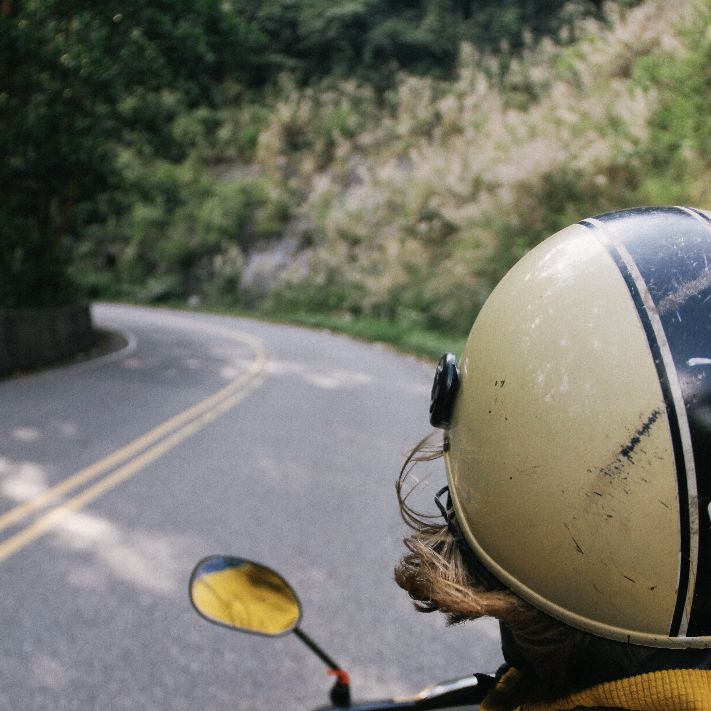
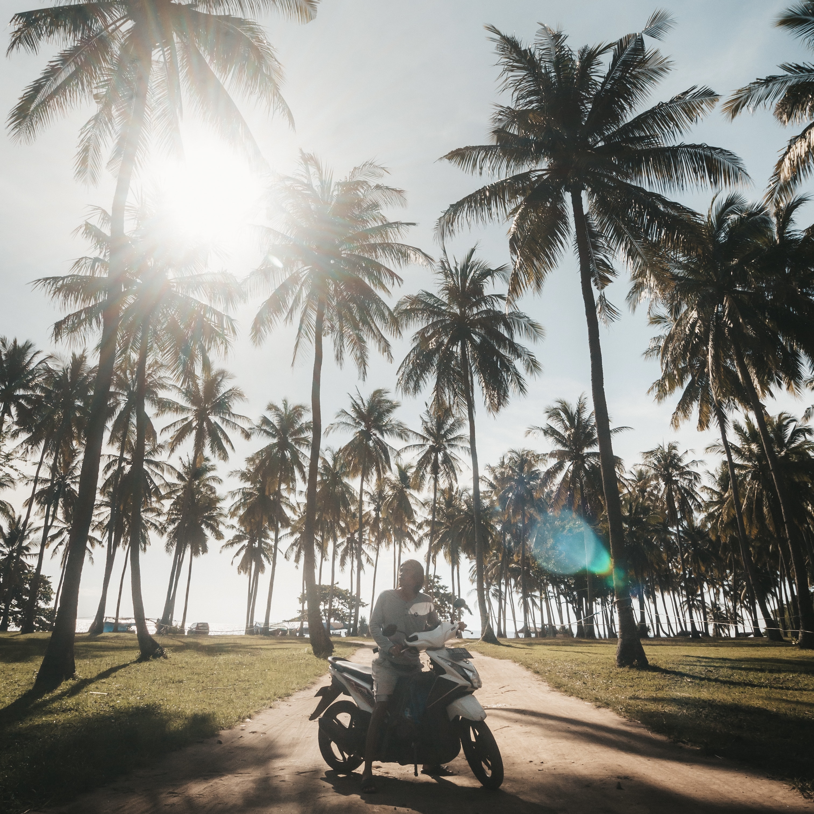
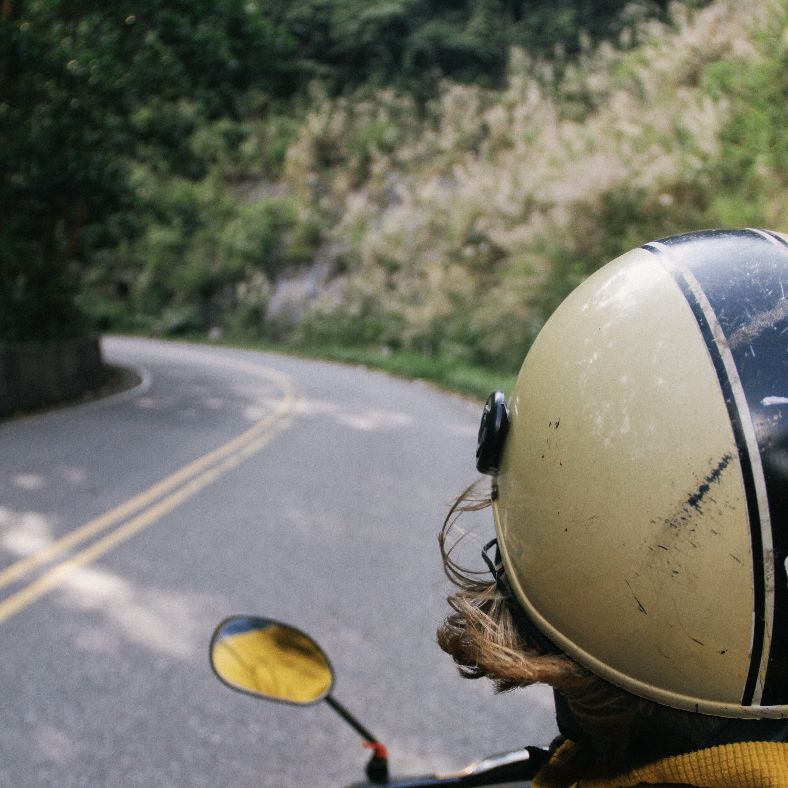
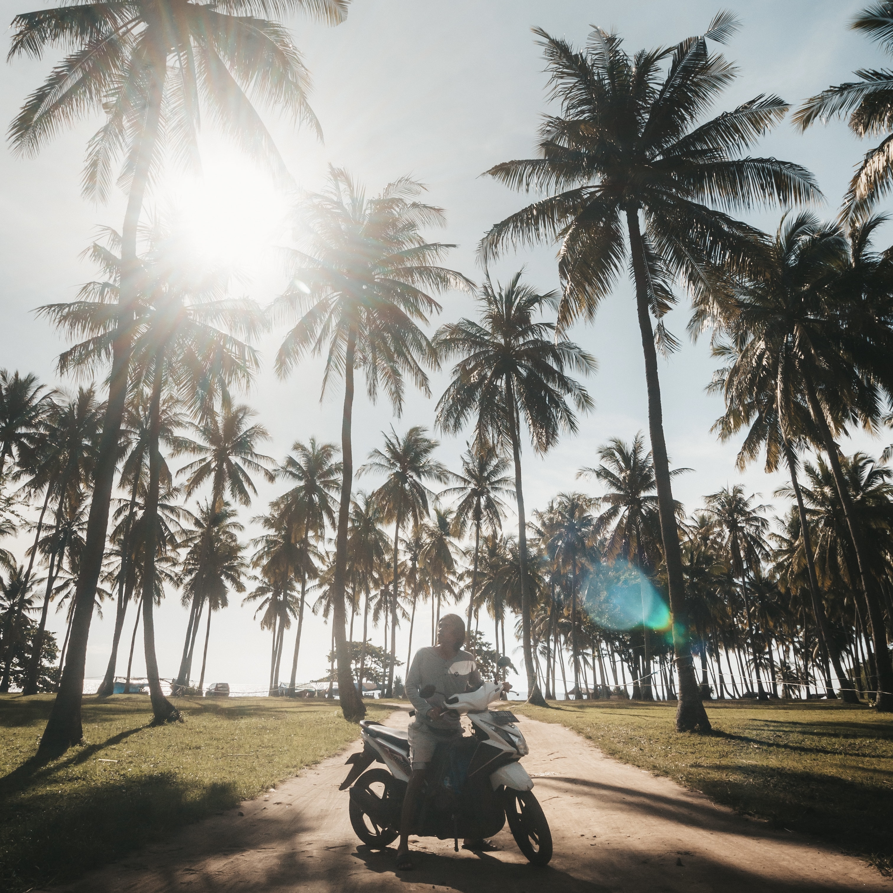

Rent a scooter!
It is ideal to rent a scooter in Bali and go on the road. Nature is especially beautiful in the vicinity of Ubud. Get off the main road and meander along the narrow countryside roads. In addition to giving you a wonderful feeling, it also gives you complete freedom. Renting a scooter in Bali is dirt cheap and will cost you about €4 per day.
 


